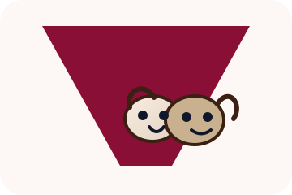
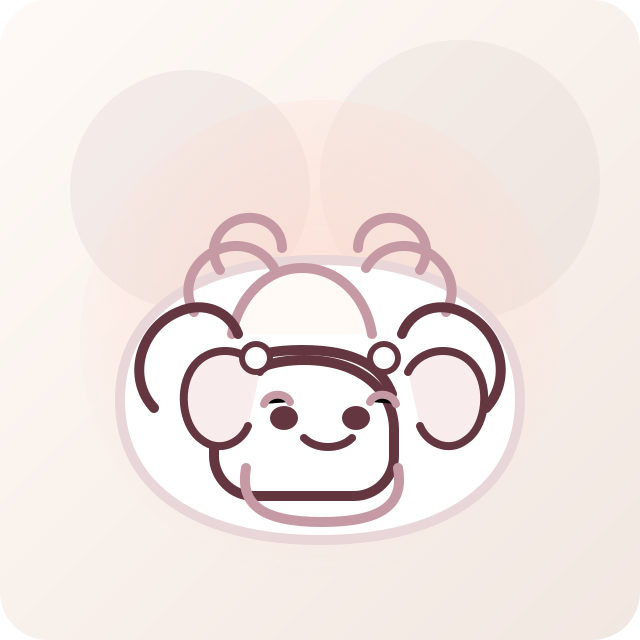
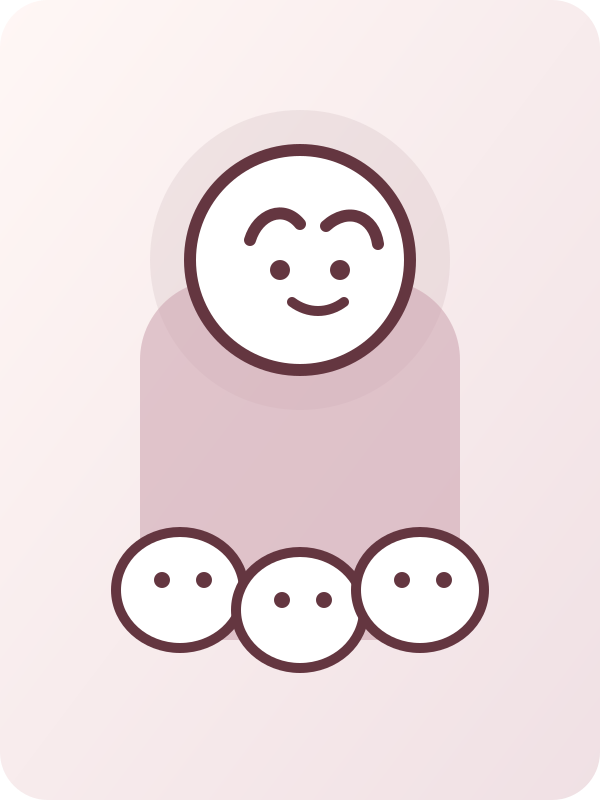
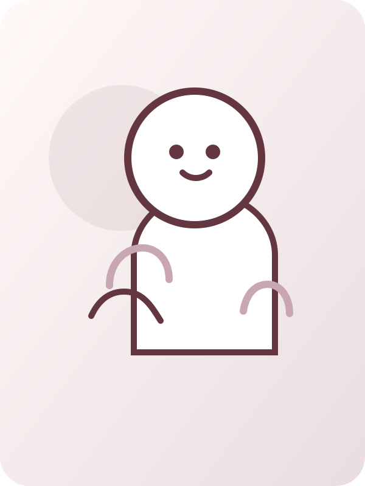

Djóralæknastovan VÍVit taka okkum av tínum kelidýri við umsorgan og 20 ára royndum. Tú kanst kenna teg tryggan frá fyrsta degi.

Vit gera tað lætt at fáa skjóta hjálp, áðan tú verður ørkymlað/ur. Vel eina tænastu, sum hóskar til teg og títt dýr.
Tá tú ert í iva, og djórið vísir sjúkutekin, er tað lætt at blíva bæði bangin og ørkymlaður. Heilsukanning er best, tá tú ikki heilt ert sikkur í hvat er galið og bara vilt hava skjótt svar.
Tá tú ert óviss, og djórið vísir tekin, sum tú ikki kennir aftur, er tað lætt at føla seg bæði bangnan og ørkymlaðan. Tosa vit beint út: tú vilt bara vita, um tú skalt koma beinavegin ella um tað kann bíða.
Tað er júst tað, hesar vegleiðingar eru gjørdar til. Tær vísa tær:
Vit eru eitt toymi av djóralæknum við røkt í hørmuni og smíli á varrum. Tú kennir okkum – og vit kenna teg og tínar kelidýr.

Bergur
Karin